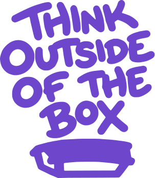
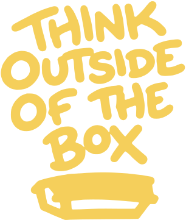
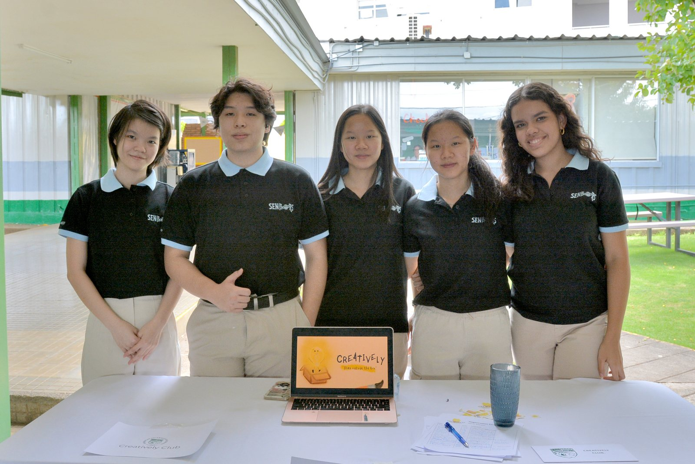
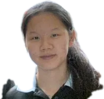
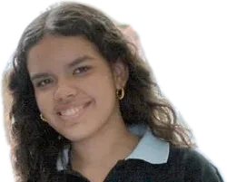
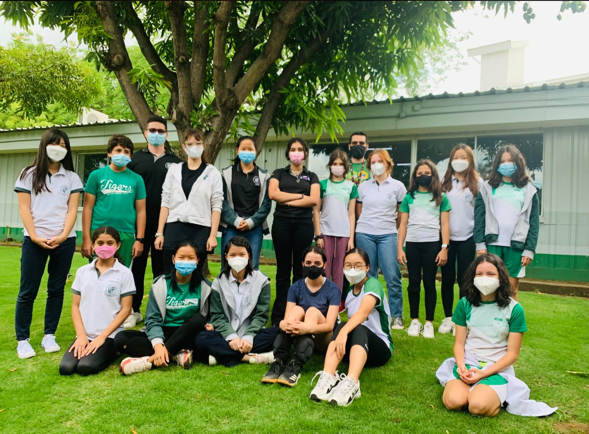
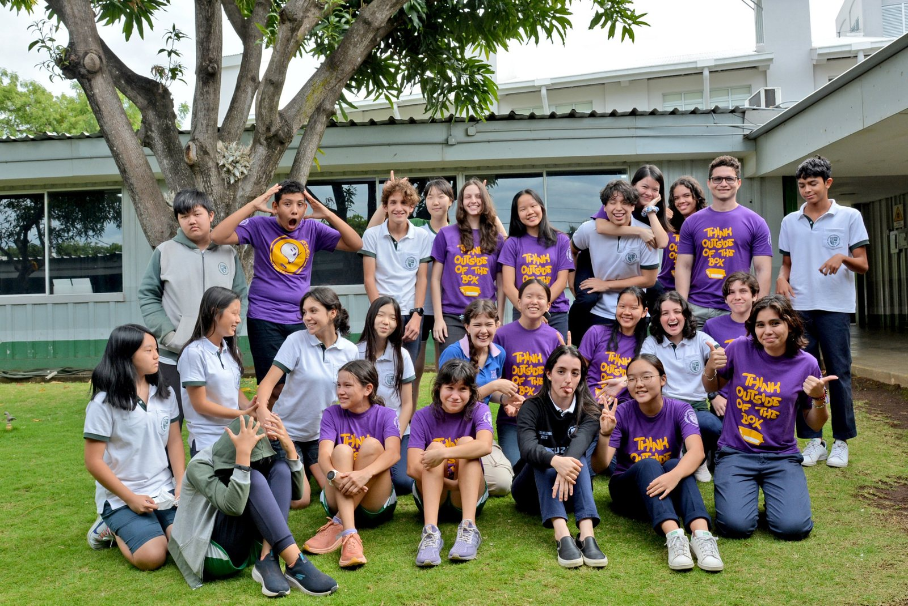
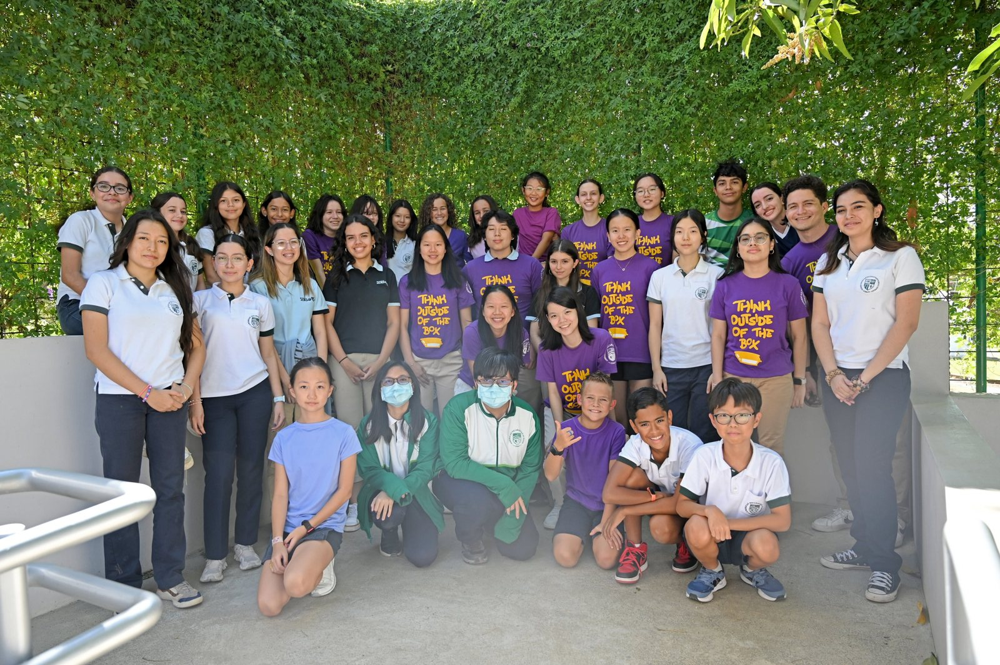
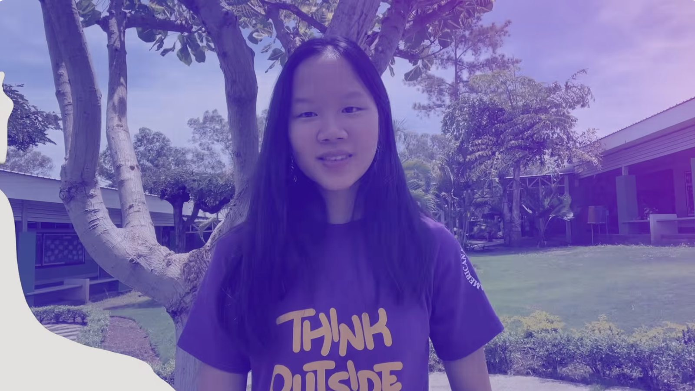
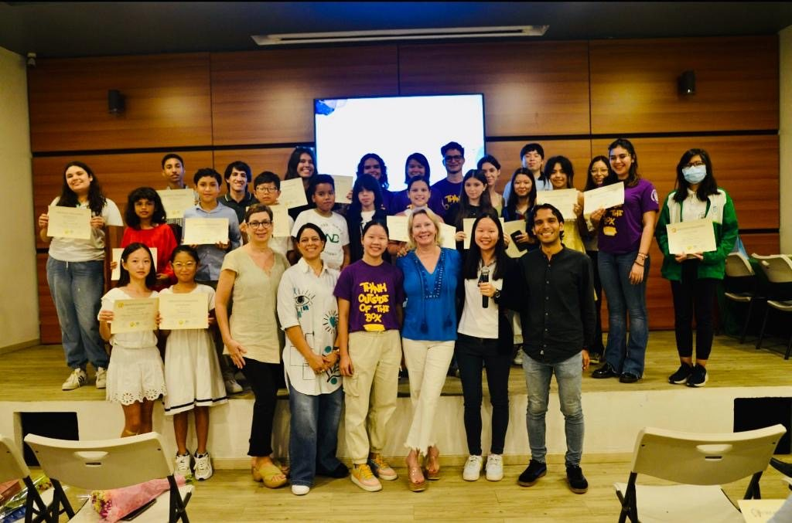

Our mission
To promote self-expression through creative projects and raise awareness of the importance of visual arts by encouraging members to think creatively and critically.
Art Club · American Nicaraguan School · Since 2021
We spread color around campus and give every student a place to express their ideas through visual art.
Our slogan


Every idea starts in a box. At Creatively, we help it climb out and light up.
Our story
Creatively Club was founded in the final months of the 2020–2021 school year at the American Nicaraguan School, with one simple idea: think outside the box.
The Creative Challenge is the club's primary and most important event: a yearly art competition open to every student at ANS.



Hover over or tap anyone in the photo, or a name below, to bring them forward. Listed left to right as they stand.
What we stand for
To promote self-expression through creative projects and raise awareness of the importance of visual arts by encouraging members to think creatively and critically.
To inspire and encourage people to be open-minded and surpass conventional ideas.
Our goal is mainly to spread colors around campus, spark inspiration in all members of our community, and express ourselves and our ideas through art and visual aesthetics.
Our community
Creatively is open to every student who loves to create, from middle school to high school. From our 1st year to our 2nd year, the club grew from 30 to 60 members, and we kept 60+ members in our 3rd year.

1st year
2nd year
3rd yearOur signature event
The Creative Challenge is our annual art competition and the most important event we host, held every year from 2020 to 2024. Each edition asks students one question to answer with art. Click a theme to read its full prompt.
Theme
What is happiness to you?Read the prompt →
Theme
What is your vision of the future?Read the prompt →
Theme
What is your favorite memory?Read the prompt →
Theme
How would you interpret and visualize beauty in chaos?Read the prompt →

Watch on YouTube VideoHear about the Creative Challenge from usOur members explain the Creative Challenge and invite every student to take part.
✨ 4th edition · 2023–2024 Award Ceremony & Art Gallery The first Creative Challenge open to other schools. One night, four schools, one art gallery. 4 schoolsDec 1 20231 gallery night Step inside the ceremony →Walk through it in 3D
Every Creative Challenge entry hangs in our 3D gallery. Step inside, look around, and walk from piece to piece.
Beyond the Challenge
All year long we run booths and activities that bring color to campus and raise funds for art materials.
Every September we set up at the ANS Open House to welcome new students and families and invite them to join the club.
Our first time ever attending an Open House! Our officers ran the Creatively table, sharing what the club does and selling drinks.
Every October we run a booth at the ANS Fall Festival to raise funds for art materials.
Our themeAngry Birds
Our first Fall Festival ever! We built a giant bird-launcher game: knock down the piggies’ tower with a slingshot, score 60 points with 3 balls, and win a prize.
All our members came together to make the red birds out of paper and build the green piggies for the game.
Here is how our booth looked once everything was ready.
Our themePirates
We went full pirate: a Toss the Ring treasure map, a shark game, string lights, and prize bags full of candy and puzzles.
Every March we join the school Kermesse with a game booth to raise funds for art materials and other club needs.
We collaborated with Rescatando Huella, a club that focuses on saving and helping domestic animals. Together we ran a booth with two games we built ourselves.
We prepared two games: a shooting game where you aim at an airplane, and a marble run where marbles roll down a board full of pegs.
Our two games, ready for the Kermesse: the airplane shooting game and the colorful marble run.
Our booth with Rescatando Huella on the day of the Kermesse.
We collaborated with the Future Art Honor Society, which will become Creatively’s future club. Together, our ocean-themed booth had Plinko, Toss the Ring, a shark game and a wall of plushie prizes.
Throughout the year, members paint walls around campus to spread color and bring art into everyday spaces.
Our first wall painting, in the Innovation Building! Our purpose was to turn blank walls into spaces that inspire everyone who uses them. We created 3 designs. Pick one and follow it from the first sketch to the final product.
We sketched the design in pencil on the yellow wall.
We planned where every gear would go.
We traced the big “G Suite” letters and app icons.
This year we painted two murals: the Student Life Room and the counselor’s office. Use the arrows or press play to follow each one from start to finish.
We painted the Student Life Room with doodles of everything students love: extracurriculars, sports, after-school activities and some funny things too.
For the counselor’s office, members painted the background together.
Throughout the year we hold bake sales to fund materials for the club.
This was the club’s first bake sale! We cooked all the crepes ourselves as our signature food for the sale. We split the work: one team cooked the crepes and the other filled them with Nutella and other ingredients. It was a fun experience!
Before the sale, we cooked every crepe ourselves, then filled and folded them.
Our first bake sale table and the line of students waiting for crepes.
Our bake sale on the field drew a huge line of students for cookies, cake slices and treats.
We use art to celebrate holidays, cultures and creativity itself, through short animations, videos and activities shared with the whole school.
Videos made by our members. Click one to watch it on YouTube.
Why a light bulb jumping out of a box? This video tells the story behind the Creatively logo: how our little bulb was drawn, what it stands for, and how it became the face of “Think outside the box.” An idea can’t shine while it stays inside the box, so our bulb climbs out and lights up.
Watch the story ↗Our light bulb in a pilgrim hat, surrounded by falling autumn leaves, says thank you to the ANS community.
📰 Shared in the school’s Tiger Forecast, Nov 22–24, 2021
A red dragon flies through an ink-painted mountain landscape to celebrate the Lunar New Year.
📰 Shared in the school’s Tiger Forecast, Jan 31–Feb 4, 2022
For World Art Day, we teamed up with the National Art Honor Society to set up a giant drawing board at the Mango Tree Cafe with one rule: “Draw anything that comes to mind.” Students of every age filled it with drawings, names and happy messages.
In our video, we explain what World Art Day is and why art matters in everyday life. Then we invited the whole school to join in at our giant drawing board.
Watch the video ↗We meet twice a month to talk about upcoming events and service hour opportunities, and to keep our members active. We take attendance at every meeting.
When we couldn’t meet at school, we met on Zoom.
Back in the classroom, we presented our projects and planned what came next.
Flip through the slides from some of our real meetings.
Wednesday, September 28th, 2022: our second meeting of the year.
Wednesday, November 9th, 2022: our third meeting.
Wednesday, February 22nd, 2023: club meeting.
Creatively members who want to help with anything art related can become Art Mentors and assist the art teachers in their classes.
Art Mentors support students who are passionate about different art techniques and movements. In the studio, students experiment with different media and styles, get constructive feedback from a mentor and grow their natural skills.
1 hour of community service every Wednesday.
Every Flex Day cycle, on Wednesday of every week, in middle and high school art classes:
W1 · 7:25–8:30 AMW2 · 8:35–9:40 AM
Max 2 mentors per slot, first come, first served.
Fun Block Creatively can happen anytime of the year: fun, hands-on activities we design for the school community.
Our first Fun Block was a Pirate Scavenger Hunt for middle school on Flex Day in November 2021. It was something I had always wanted to do, and we wanted every participant to have fun. Teams followed maps, riddles and clues around campus to find the golden treasure. Organizing it taught us how important preparation and good organization among our members are to run an event well.
We designed the flyer, the clue maps and a briefing for our guides, so every team had a club member leading the way.
Teams raced around campus solving riddles, drawing clues and searching for the treasure.
The winning team found the golden tickets hidden in a locker.
What comes next
In April 2024, Creatively Club became the National Art Honor Society at ANS, the first chapter in the country. Our officers graduated that same year, so we stepped down knowing the club's spirit would keep growing under a new name.
“Creatively Club has now transitioned to the National Art Honor Society, which will serve as a channel for the Visual Art Community members to find and create opportunities to potentiate their artistic leadership.”American Nicaraguan School
We celebrated with every active member of Creatively and the new National Art Honor Society, sharing pizza and memories one last time as Creatively.
This ceremony officially told our members and the school that Creatively would merge into the National Art Honor Society. With the society and our principal present, we introduced the new society, welcomed a special guest speaker and said goodbye to Creatively Club.
Thank you for thinking outside the box with us. 💛
THEME
We currently live in unexpected times and in uncertainty. We all have struggled and persevered through these hard times. However, among all the negativity, we also had our most memorable and happiest moments that define us. Thus, capture happiness in your artwork. This could be a memory, object, or person that makes you feel happy.
THEME
The future is unknown, but everyone has different visions of the future. You might have questioned countless times: What will our future look like? Will the cities reach the stars? Or will they be sunken under the ocean? Will humanity reach its pinnacle or its despair? We want to know how you envision the future and how you will approach this theme, either in an optimistic or pessimistic way. Remember there is no answer to this prompt. Express your thinking through your knowledge, observation, and imagination. Don't forget to be innovative and visionary.
Use any medium (e.g. painting, digital art, photography, artifacts, 3D models, etc.) that will help you express your ideas the best you can, and don't restrict yourself to only one medium; demonstrate your creativity. We want to see your confidence in using different mediums and materials to express your ideas.
THEME
What is a memory that you never forgot? That you can still recall it until this day? It could be a memory of your childhood or a remembrance of yesterday. It could be a moment in your life that made you happy, or a time when you realized something important for you. Picture yourself in that flashback and express it through Canva.
PROMPT
Our lives are full of complexities, but despite knowing the complexities we force ourselves to seek constant perfection and accomplishments. For this reason, we tax ourselves trying to reach harsh expectations. Although it is healthy to have ambitions, it is also important to look around and notice the beauty in our chaotic lives. How would you interpret and visualize beauty in chaos? In other words, show us what is considered beautiful in your eyes. It can be a moment, sound, person, object, scenery, or something else. What made you smile during your hardest times?